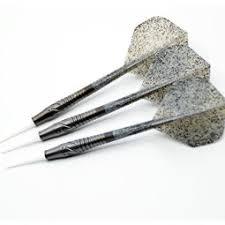
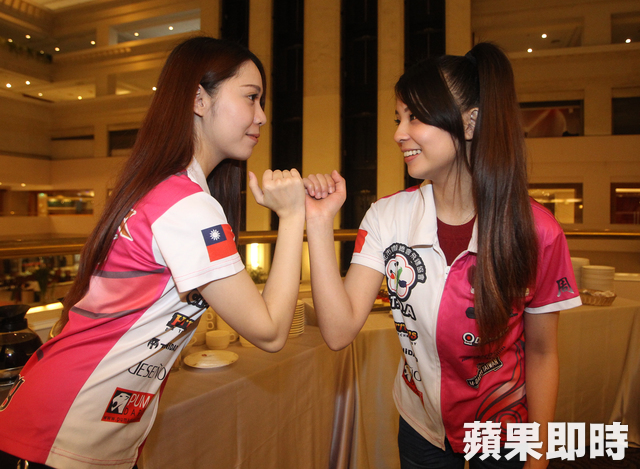
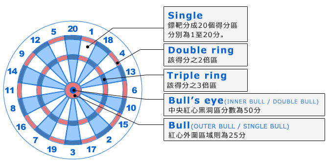

飛鏢運動據說最早起源於羅馬帝國時代。軍團的士兵們在戰事閒暇之餘發明的一種競賽遊戲，不使用弓而單純利用箭，來投向用大樹橫切面(年輪)製成的鏢靶，形成了飛鏢運動最早的雛型。之後便在世界各地廣為流傳，而在現今的日本甚至造成一股軟式飛鏢的風靡熱潮。
飛鏢和一般運動(競賽)的增分算法不太一樣，而是一種減分競賽，因此可培養選手的計算能力及周全的判斷力。另外，由於可強化自律神經，持續增強選手集中力，並對大腦皮質產生刺激，被視為一種鍛鍊心智能力的競賽，加上注重禮儀的概念，故作為一種教育性運動，對於青少年的倫理培養及性能向上發展而言，十分受到肯定及推崇。
對於現今的高齡化社會及普遍運動不足的現象，用來復健身體機能及防止老人癡呆也有一定效能，因此飛鏢運動已不再只是一種競賽遊戲，而是不分男女老幼，富有教育性的生涯活動。
在開頭的介紹中也有提到，飛鏢是注重禮儀的一種運動。飛鏢比賽時選手首先互相握手致意，並以互碰拳頭開始，也以互碰拳頭來結束 對於任何競賽來說遵守最基本的禮貌，這是應該要有的運動家精神。
Softdars，中文為軟式飛鏢。是指從距離靶面紅心約244公分所設置的投擲線位置，使用三支飛鏢，就各鏢落點之分數區域來計分，所進行的一項運動。依照不同的玩法各有不同的計分方式。看似簡單的動作，但要將三隻飛鏢往同樣一個區塊，甚至是集中於同一個狹小區塊之中，是需要非常高的專注力以及集中度。
飛鏢靶面是由1~20的數字配置，並再細分為兩倍區三倍區，首先先從認識靶面開始吧。
